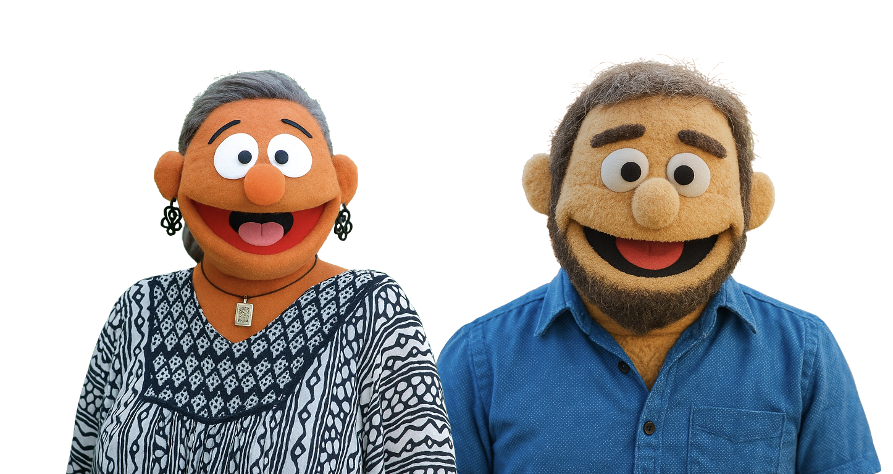
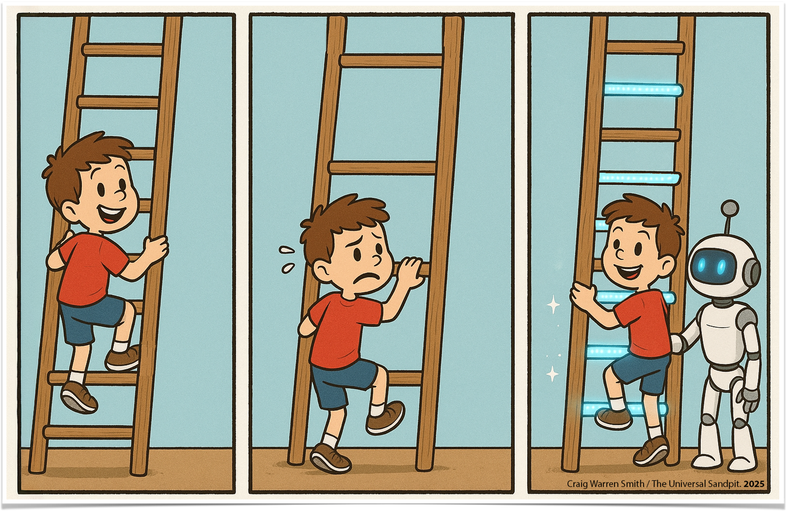
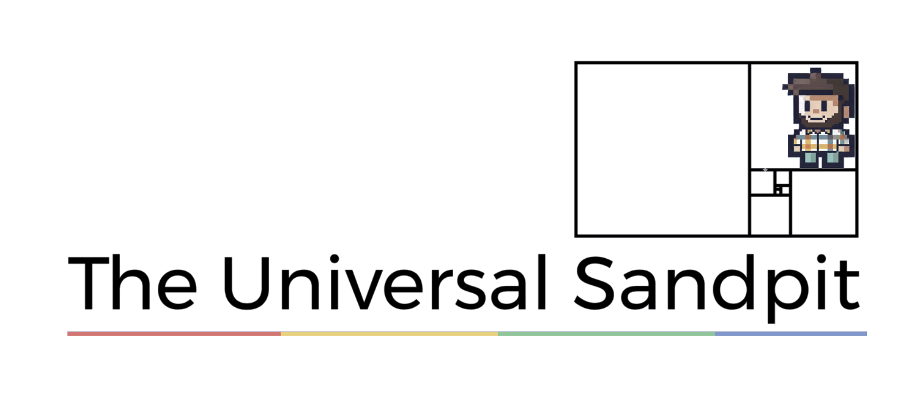
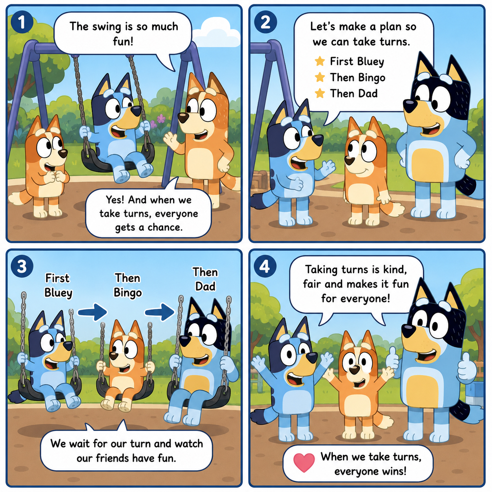
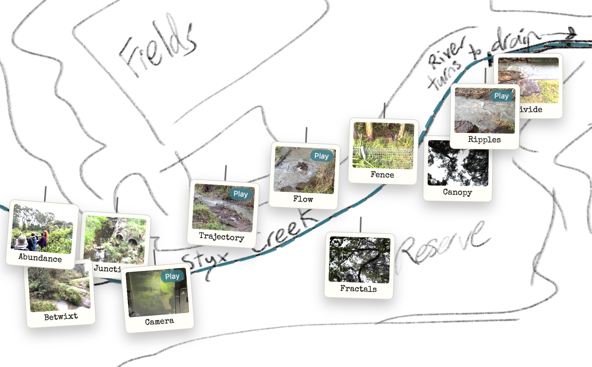
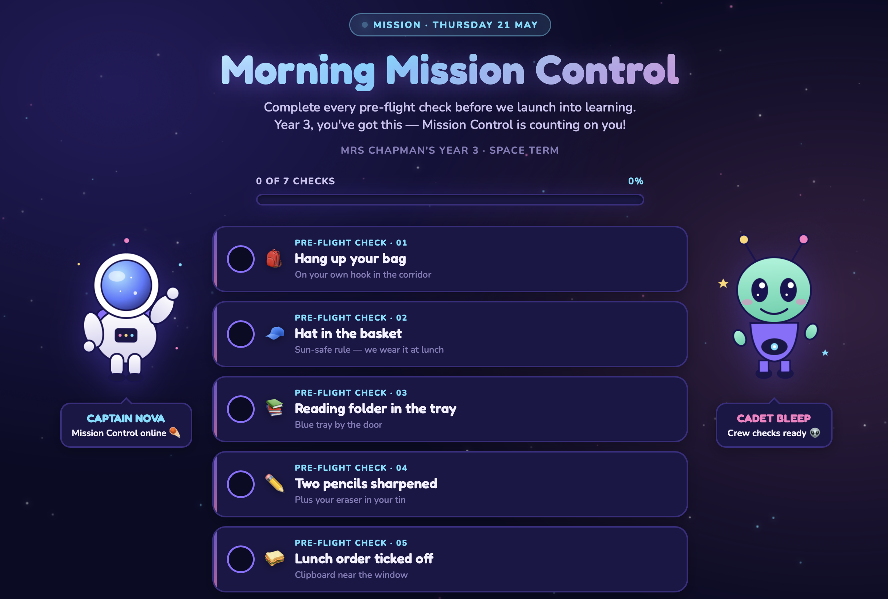
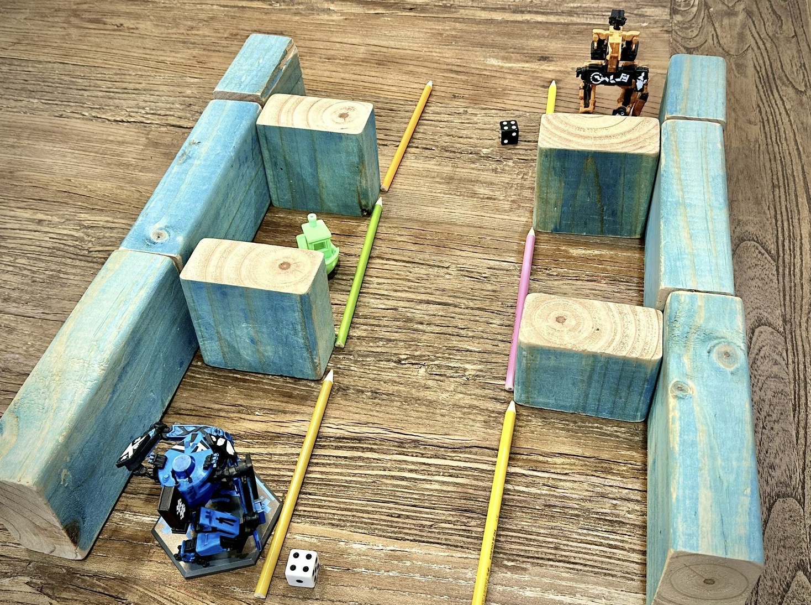
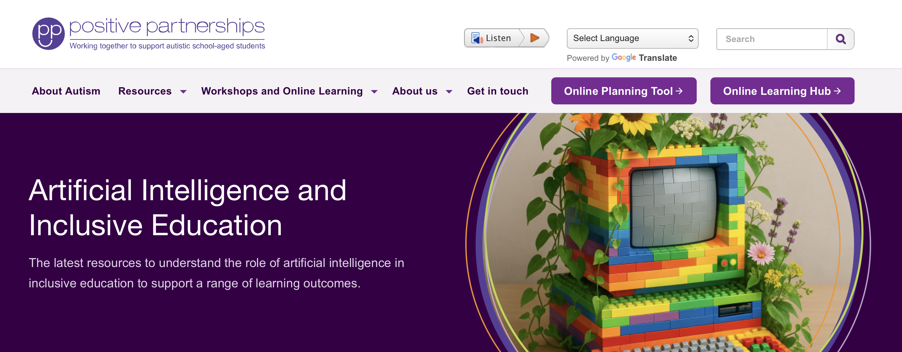

Jen Cousins & Craig Smith

Inclusion is how we design for human variability.
We might think of inclusive learning design as emerging from the interaction of three forms of awareness:
An inclusive design philosophy that places emphasis on proactive design.
Learning experiences and environments are built to be accessible, supportive and engaging for all learners — from the start.
How we engage and motivate learners.
How we represent content.
How learners show what they know.
Devices, software and tools help individuals to:
These assistive technologies should integrate into the learning experience and environment as part of inclusive design.
Design for multiple means of…
As technology has evolved, what it allows us to do to provide access and personalisation of learning has evolved with it.

how we engage and motivate learners · how we represent content · how learners show what they know
In this session, three ways of using AI — all part of the same inclusive design process.
Teacher-facing. Sometimes before the lesson, sometimes during — sometimes the same thing.
Communication, sensory, executive function. Surfacing our cognitive biases. Thinking in neurodiversity-affirming ways.
Chunking learning, supporting task initiation, helping with self-regulation.
In the Australian Autism Educational Needs Analysis, autistic students described the difficulties they faced at school:
AI can readily support many of these.
Saggers, B., Klug, D., Harper-Hill, K., Ashburner, J., Costley, D., Clark, T., Bruck, S., Trembath, D., Webster, A. A., & Carrington, S. (2018). Australian autism educational needs analysis — What are the needs of schools, parents and students on the autism spectrum? Cooperative Research Centre for Living with Autism, Brisbane.
From here we're in workshop mode. As we go through planning strategies, you'll see two kinds of resources side by side:
We'll model planning strategies using tools Craig has built — to show what inclusive AI use can look like in practice.
You'll also get the underlying prompts. Take them to whichever AI platform your school uses — the strategies apply across tools.
The tools change. The thinking is yours.

theuniversalsandpit.org“Break this task down for a [age]-year-old.”
Then ask what executive functions it really needs — and how to scaffold each.
“Build me a differentiation rubric for [topic].”
You choose the measures and levels — or ask for suggestions to start.
“Turn this assignment into steps with time estimates.”
Plain language students can follow on their own.
“Break this lesson into a visual sequence.”
Each card: a short label, a one-line description, and an icon idea.
Three tools on The Universal Sandpit to plan, think, and check your work through a UDL lens.
“Make this lesson more inclusive for my neurodivergent students.”
Then ask for ideas across engagement, representation, and action & expression.
Craig and his son building a video game with AI.
Watch — or keep playing with the planning tools.
“Help me reflect on this through a neurodiversity-affirming lens.”
Ask me questions that surface my assumptions and other ways of seeing it.
“Help me plan a new approach to this repeat pattern.”
Give me a staff plan and a warm script I can read with the student.
“Write a social narrative about [situation].”
Plain, first-person language — warm, affirming, no moralising.
Pair an AI-generated script with an AI-generated comic.

Match the comic to what the student loves —
for extra motivation and engagement.
Bluey here, as an example. Made with the Social Script Generator + ChatGPT image generation.
AI that doesn't just write code — it builds, edits, runs, and iterates with you.
Craig's working notes on what agentic coding can do for inclusive education.
Open Field NotesClaude in your terminal — reads, edits, runs, and ships code with you.
Learn moreGPT-based agentic coding — in your editor, terminal, or the cloud.
Learn moreA dense three-page Stage 3–4 unit on Newcastle, rebuilt as an accessible one-page student dashboard.
Weekly cards with progress tracking, three assessment choices, and multiple visual themes for engagement.
Open the dashboardThe goal: a predictable, calm experience for students. The AI proposed structure. Iteration shaped the result.
Behind the scenesA class walk along Styx Creek, documented as a hand-drawn map of polaroids and video markers.

Year 3's daily morning routine, rebuilt as a space mission — by their teacher, with an AI agent.

“Break this assignment into chunks I can manage.”
Give me a list I can rearrange, not a plan I have to follow.
“Help me start [task] when starting is hard.”
Suggest gentle ways in — sensory, emotional, structural.
“Help me plan today around the energy I actually have.”
Use spoon theory. I'll tell you my spoons and what I want to do.
“Help me get from feeling [X] to feeling [Y].”
Suggest small steps I can try — gently.
“Break this task down so I can actually start it.”
Use small, low-pressure subtasks. Pick the spiciness to match my mood.
Students gathered random classroom resources. We took a photo, asked AI to invent a game — and it did.

Webinars, articles, and videos on AI and inclusive education — on our website.

What's one simple AI tool or prompt you'll add to your daily classroom planning this week?